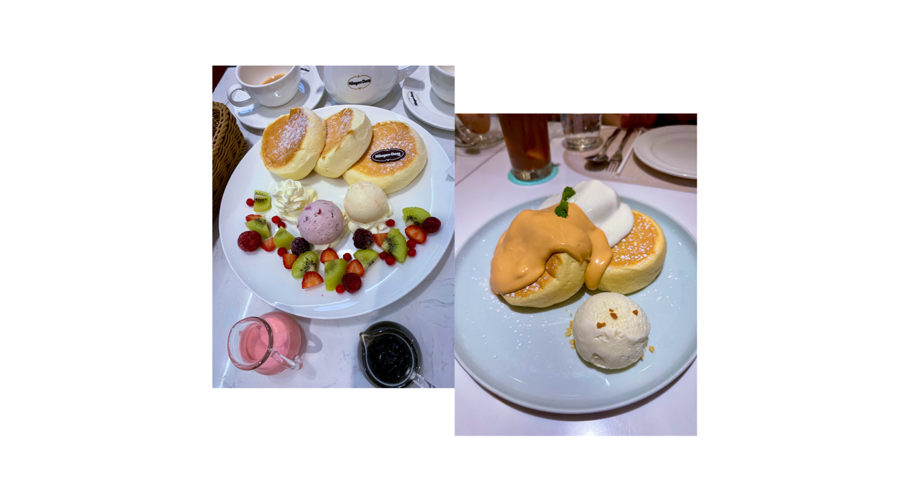

deliciously thick and fluffy pancakes? easy! add 1 egg and 100ml of whole milk in a bowl and whisk thoroughly. add half the packet of pancake mix and whisk until smooth. heat a frying pan over medium heat then add 1/3 of the pancake mix. turn heat to low for about 3 mins until bubbles form on the top. flip the pancake and cook for a further 3 minutes until brown on both sides and slide onto a plate. repeat until all batter is used, turn off the heat, and enjoy!
